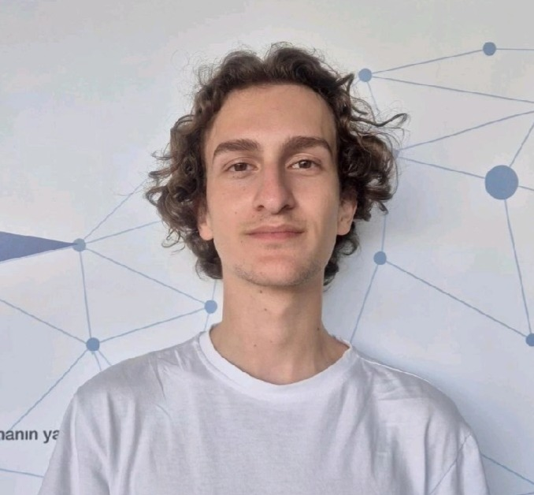

Özyeğin Üniversitesi · Bilgisayar Mühendisliği · 3. Sınıf
Siteme hoş geldiniz, ben Tolga. Hayatım boyunca hep kendimi geliştirmek ve tecrübe edinmeyi ön plana koydum.
Bu konuda da hala çalışmalarım, sertifika programlarına katılımım ve seminerlere katılımım devam ediyor.
Welcome to my website, I'm Tolga. Throughout my life, I’ve always prioritized self-improvement and gaining experience.
I continue to participate in training programs, certifications, and seminars to grow in this journey.
Hakkımda
About Me
26 Aralık 2003 tarihinde Almanya'nın Stuttgart şehrinde doğdum. Yaklaşık 2,5 yıl orada yaşadıktan sonra ailemle birlikte İstanbul, Türkiye'ye taşındık ve o zamandan beri İstanbul'da yaşamaktayım.
İlkokul ve ortaokul eğitimimi Denizatı Okulları'nda tamamladım ve lise eğitimime de aynı okulda, Denizatı Anadolu Lisesi'nde devam ettim. Eğitim hayatım boyunca okulun sunduğu imkanlardan en iyi şekilde faydalanmaya çalıştım. Ortaokul dönemimde, okulun sağladığı yurtdışı eğitim programları kapsamında 6. ve 7. sınıfta bir haftalığına Almanya'da dil okuluna gittim. Lise yıllarımda da benzer deneyimler yaşadım. 9. sınıfta İsviçre'ye giderek CERN laboratuvarlarını rehber eşliğinde gezme ve bilimsel araştırmaları yakından gözlemleme fırsatı buldum. 9. sınıfın sonunda Cambridge, İngiltere'de üç haftalık bir dil okuluna katılarak yerel bir ailenin yanında yaşadım ve İngilizce becerilerimi geliştirme imkanı elde ettim. 10. sınıfın sonunda Augsburg, Almanya'da üç hafta boyunca bir Alman ailenin yanında kalarak Almanca bilgimi ilerlettim ve dil okuluna devam ettim. 11. sınıfta ise pandemi nedeniyle planlanan yurtdışı dil okulu programımız maalesef ki düzenlenemedi.
Lise döneminde GÖK (Görünenin Ötesini Keşfet) projesine dahil oldum. Bu proje, kariyer sahibi konuşmacıları dinleyicilerle buluşturan ve farklı bakış açıları kazandırmayı amaçlayan bir etkinliktir. 10. sınıfta projede üye olarak yer alırken, 11. sınıfta yönetim kuruluna katılarak konuşmacılarla iletişim kurma ve etkinlik süresince organizasyonu yönetme görevlerini üstlendim.
2021 yılında %50 burs ile Özyeğin Üniversitesi Bilgisayar Mühendisliği bölümüne başladım. İngilizcemi geliştirmek ve kulüp aktivitelerine daha fazla katılmak için B1 kurundan başladım.
Üniversite hayatım boyunca çeşitli kulüplere katılarak kendimi geliştirmeye çalıştım. Bunlardan biri olan ÖZÜ ODA Tiyatrosu'na katılarak 2022-2025 yılları arasında her ay sahne aldım. Ayrıca, Toplumsal Çatı Kulübü'nde aktif bir rol aldım. Bu kulüp, sosyal sorumluluk ve yardım, farkındalık ve akademik gelişim olmak üzere üç alanda faaliyet göstermektedir. Sosyal sorumluluk alanında barınaklara mama bağışı, yardıma muhtaç çocuklara kıyafet desteği ve "Çorbada Tuzun Olsun" derneğinde gönüllülük gibi projeler gerçekleştirdik. Farkındalık konusunda çeşitli seminerler ve atölyeler düzenleyerek toplumsal konulara dikkat çektik. Akademik alanda ise Etik Liderler Akademisi (ELA) gibi programlara ev sahipliği yaparak öğrencilere liderlik ve etik bilinci kazandırdık. Kulübe 2022 yılında üye olarak katıldım, 2022-2023 döneminde alt kurul üyesi, 2023-2024 döneminde denetim kurulu üyesi, 2024-2025 döneminde ise başkan olarak görev almaktayım.
Kazandığım sertifikalar arasında OpenFAB Teknoloji Merkezi'nde MAKErobot ve MAKEngineer sertifika programlarını tamamladım. Bu sertifika programlarıyla birlikte Arduino, lehimleme, devre kartı tasarımı ve mobil uygulama geliştirme gibi teknik konularda deneyim kazandım. Bunların haricinde Etik Liderler Akademisi'ne (ELA) katılarak iş etiği ve liderlik alanında eğitimler aldım. Ardından Baltaş Grubu'nun "Problem Çözme ve Karar Verme" sertifika programına katılarak problem analizi, problem çözme ve karar verme becerilerimi geliştirdim.
Kendimi öğrenmeye aç, yeniliklere açık, sosyalleşmeyi seven, çalışkan ve kararlı biri olarak tanımlıyorum. Kazandığım deneyimlerin ve öğrendiklerimin üzerine yenilerini eklemek için heyecan duyuyorum. Yeni fırsatlar keşfetmeye ve kendimi geliştirmeye devam edeceğim.
I was born on December 26, 2003, in Stuttgart, Germany. After living there for about 2.5 years, I moved to Istanbul, Turkey, with my family and have been living there ever since.
I completed my primary and secondary education at Denizatı Schools and continued my high school education at the same institution, Denizatı Anatolian High School. Throughout my education, I tried to make the most of the opportunities provided by the school. During middle school, I attended a one-week language school in Germany in the 6th and 7th grades through the school's international programs. In high school, I had similar experiences. In the 9th grade, I visited CERN laboratories in Switzerland with a guide and had the opportunity to observe scientific research closely. At the end of 9th grade, I attended a three-week language school in Cambridge, England, lived with a local family, and improved my English. At the end of 10th grade, I stayed with a German family in Augsburg, Germany, for three weeks and continued my language school. Unfortunately, the international language school planned for 11th grade could not be held due to the pandemic.
During high school, I joined the GÖK (Discover Beyond the Visible) project. This project aims to bring professionals together with audiences and offer different perspectives. In 10th grade, I participated as a member, and in 11th grade, I joined the executive board, taking on responsibilities such as contacting speakers and managing event organization.
In 2021, I started studying Computer Engineering at Özyeğin University with a 50% scholarship. I started from the B1 level to improve my English and participate more in club activities.
During university, I joined various clubs to improve myself. One of them was ÖZÜ ODA Theater, where I performed monthly from 2022 to 2025. I also took an active role in the Toplumsal Çatı Club, which operates in three areas: social responsibility and aid, awareness, and academic development. In the area of social responsibility, we organized food donations to shelters, clothing support for children in need, and volunteer activities with the “Çorbada Tuzun Olsun” association. In awareness, we held seminars and workshops on social issues. Academically, we hosted programs like the Ethical Leaders Academy (ELA), helping students gain leadership and ethical awareness. I joined the club in 2022 as a member, became a subcommittee member in 2022–2023, a supervisory board member in 2023–2024, and I currently serve as president for 2024–2025.
Among the certificates I have earned are the MAKErobot and MAKEngineer certification programs from OpenFAB Technology Center. Through these programs, I gained experience in Arduino, soldering, circuit board design, and mobile app development. Additionally, I participated in the Ethical Leaders Academy (ELA), receiving training in business ethics and leadership. Later, I attended Baltaş Group’s “Problem Solving and Decision Making” certificate program, improving my skills in problem analysis, solving, and decision-making.
I describe myself as eager to learn, open to innovation, sociable, hardworking, and determined. I am excited to add new experiences and knowledge to what I have already learned. I will continue discovering new opportunities and improving myself.
Projeler
Projects

Diğer projelerime GitHub hesabım üzerinden ulaşabilirsiniz.
You can access my other projects via my GitHub profile.
MAKEngineer
OpenFAB Teknoloji Merkezi’nde tamamladığım mühendislik odaklı bir sertifika programı...
An engineering-focused certification program I completed at OpenFAB...
MAKErobot
Robotik temelli teknik beceriler kazandıran bir OpenFAB programı...
A robotics-based technical program at OpenFAB...
Yetenekler
Skills
İletişim BecerisiCommunication Skills
HTMLHTML
CSSCSS
JavaScriptJavaScript
ReactReact
JavaJava
Problem ÇözmeProblem Solving
LiderlikLeadership
 LinkedIn
LinkedIn